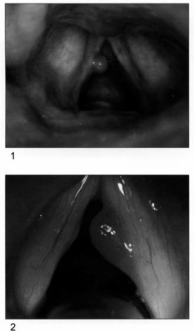
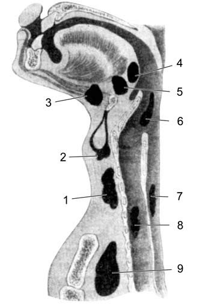
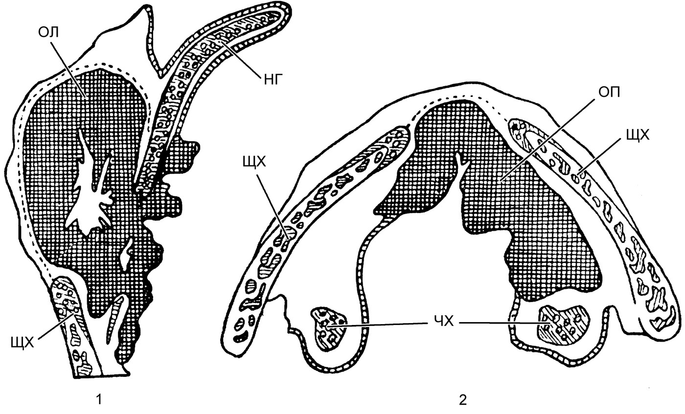
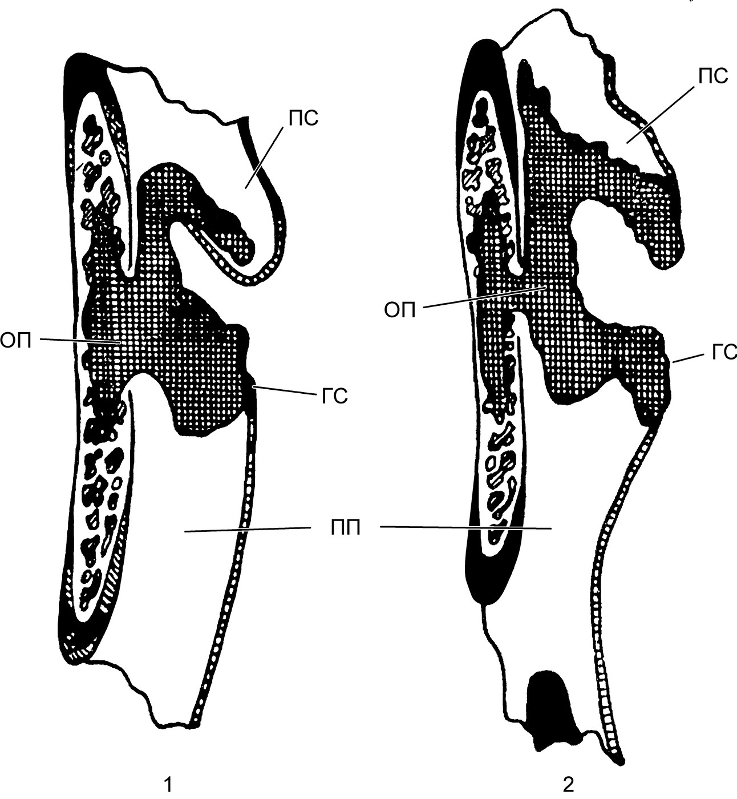
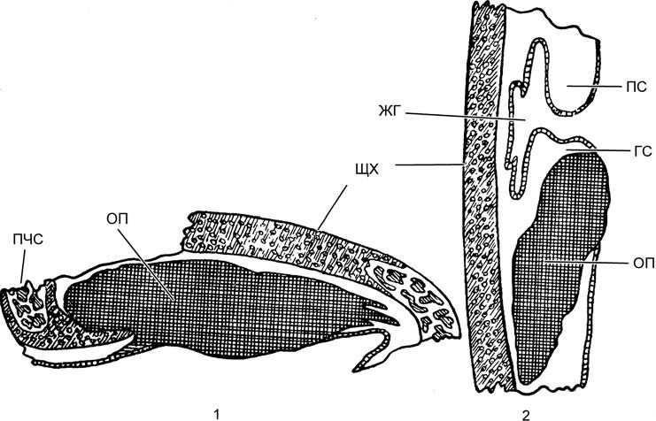
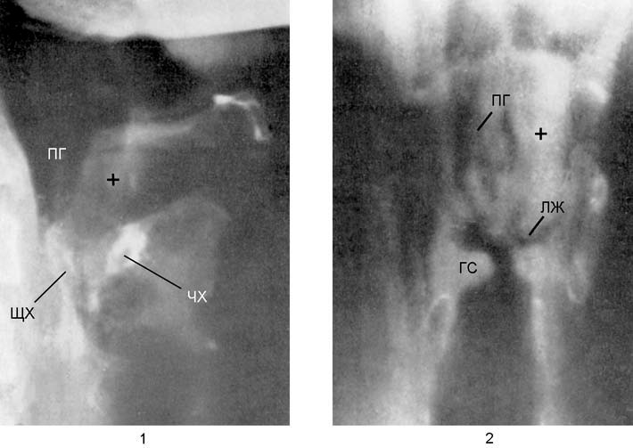
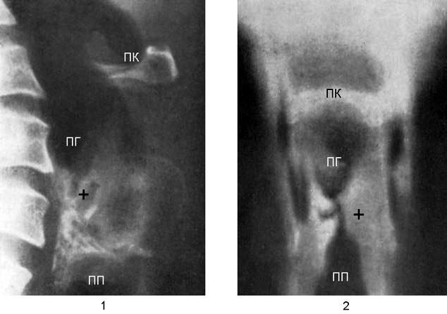

Опухоли гортани
Общие сведения и классификация
Впервые злокачественная опухоль гортани была описана выдающимся итальянским анатомом Дж. Б. Морганьи1 в XVIII в. В наше время это заболевание далеко нередко поражает лиц, находящихся в самом расцвете сил. И неизвестно, в чем кроется бо́льшая опасность — в самом заболевании, раннее распознавание которого в большинстве случаев при современных методах лечения приводит к выздоровлению, или в человеческой беспечности, а порой и в элементарной медицинской безграмотности, из-за которых больные обращаются к врачу лишь при запущенных формах, когда прогноз становится сомнительным или очень серьезным.
Гортань из всех дыхательных путей наиболее подвержена различным патогенным факторам, способствующим возникновению опухолей. К этим факторам относятся курение, алкоголизм, многие профессиональные вредности, в том числе перенапряжение голосовой функции (певцы, актеры, работники шумовых цехов). Сочетание этих факторов производит потенцирующий эффект и во много раз увеличивает риск заболевания гортани. Этому способствуют также хронические воспалительные заболевания и различные нейровегетативные и эндокринные дисфункции. Указанные патогенные факторы обусловливают возникновение преимущественно доброкачественных опухолей гортани, которые, по данным Д. И. Зимонта, Б. М. Млечина и других авторов, возникают в 12 раз чаще, чем злокачественные опухоли гортани. Однако риск при возникновении доброкачественных опухолей заключается в том, что многие из них при отсутствии эффективной профилактики могут в последующем перерождаться в злокачественные опухоли. Поэтому ко всем доброкачественным опухолям гортани следует относиться с онкологической настороженностью, и каждый раз при их удалении следует проводить тщательное гистологическое исследование препарата. Иногда при таком исследовании не удается выявить злокачественное перерождение, в том числе потому, что многие переходноклеточные новообразования симулируют доброкачественную структуру. В таких случаях применяют электронно-микроскопические методы исследования на хромосомном уровне, изучают обменные процессы на клеточном уровне, проводят исследования микроструктуры подозрительных тканей с помощью ядерного магнитно-резонансного и других лучевых методов.
По морфологическому строению и клиническим проявлениям опухоли гортани подразделяют на следующие формы (классификация опухолей гортани).
Доброкачественные опухоли: узелковая форма, полипы, папилломы, липомы, аденомы, миксомы, фибромиомы, нейрофибромы, ангиомы, дистопированные тиреоиды, кисты, хондромы, амилоидоз.
Опухоли ограниченной злокачественности: плазмоцитома, цилиндрома, лимфоидные опухоли.
Злокачественные опухоли: эпителиома, саркома.
Ch. Aubry и Ch. Jackson к доброкачественным опухолям гортани относят пролапс морганиева желудочка, ларингоцеле и даже пахидермии. Другие авторы (N. Costinescu и др.) с этим мнением не соглашаются, относя эти патологические состояния либо к воспалительным заболеваниям, либо к аномалиям развития.
В связи с тем, что в практике ЛОР-врача весьма часто встречаются не только воспалительные заболевания гортани, но и объемные образования, нам представляется необходимым привести наиболее полный перечень доброкачественных опухолей гортани.
Доброкачественные опухоли гортани
Общим для них являются «три нет»: они не инфильтрируют окружающие ткани, не метастазируют, не рецидивируют после удаления. Однако, как показывает клиническая практика, в гортани встречаются такие виды опухолей, которые, несмотря на то, что гистологическое исследование указывает на их доброкачественный характер, рецидивируют после удаления. К таким опухолям относятся папилломы, полипы и певческие узелки, а первые две формы у взрослых при частом рецидивировании могут перерождаться в злокачественные опухоли. Чаще всего встречаются узелки, полипы и папилломы, значительно реже — другие доброкачественные опухоли гортани.
Узелки голосовых складок
Эти узелки, также именуемые певческими или гиперпластическими, представляют собой небольшие парные, симметрично расположенные по краям голосовых складок на границе латеральной и средней их третей образования весьма незначительного размера (несколько миллиметров), состоящие из фиброзной ткани. Иногда они диффузно распространяются на бо́льшую поверхность складок, вызывая значительные нарушения тембра голоса.
В морфологическом понимании эти узелки являются не опухолями, а разрастанием собственной соединительной ткани голосовых складок. Обычно они возникают при перенапряжении при крике, пении, громкой декламации, особенно, по данным ряда зарубежных фониатрических исследований (Ch. Jackson и др.), когда при голосообразовании используются звуки высоких регистров, поэтому певческие узелки встречаются у сопрано, колоратурных сопрано, теноров и контртеноров и очень редко — у контральто, баритонов и басов.
При стробоскопическом исследовании установлено, что на том уровне, на котором возникают певческие узелки, при фонации высоких тонов голосовые складки принимают более конвекситальную (выпуклую) форму и тем самым более тесно и на более продолжительное время прилегают друг к другу. В результате на указанном месте сначала возникает двусторонний ограниченный очаг воспаления, вслед за чем при продолжении голосовых нагрузок возникает гиперплазия соединительнотканных волокон, наиболее чувствительных к механическим и воспалительным раздражениям. Из узелков иногда могут развиваться «полипы» голосовых складок, имеющие ту же гистологическую структуру, что и предшествующие им узелки, а следовательно — и тот же патоморфогенез.
Предполагают также, что этиологическим фактором певческих узелков могут быть подслизистые микрогематомы, образующиеся при сверхсильной голосовой нагрузке, после резорбции которых возникает фиброзная пролиферация соединительной ткани с образованием певческих узелков. Однако это предположение отвергает Ch. Jackson, он полагает, что в основе образования полипов лежат гематомы голосовых складок.
У детей узелки наблюдаются чаще всего в возрасте 6–12 лет, чаще у мальчиков, голосовой аппарат которых, находясь в стадии гормонального развития, более подвержен альтерации при голосовых нагрузках. Следует иметь в виду, что детские игры в этом возрасте неизменно сопровождаются криком. Образование узелков голосовых складок у детей нередко сопровождается вторичным катаральным ларингитом, обусловленным наличием аденоидов и нарушением носового дыхания. Удаление аденоидов, как правило, приводит к спонтанному исчезновению и узелков голосовых складок.
Патогенез и симптомы. Часто возникновению узелков голосовых складок предшествуют катаральный ларингит и длительно текущая фонастения. Последняя вынуждает больного к напряжению голосового аппарата, а первый способствует пролиферативным процессам, результатом которых могут быть не только певческие узелки, но и другие доброкачественные опухоли гортани. В начальном периоде образования узелков больные ощущают легкое утомление голосового аппарата и неадекватное образование певческих звуков при пиано (тихих звуках), особенно на высоких тонах. Затем возникает деформация голоса при любых звуках: создается ощущение «расщепленности» голоса, примеси вибраторных звуков, при этом громкая речь требует значительного напряжения голосового аппарата. Это обусловлено тем, что при фонации узелки препятствуют полному смыканию голосовых складок, образующаяся щель вызывает повышенный расход воздуха, понижается подскладочный воздушный подпор — и сила голоса не может достигнуть желаемого уровня.
Диагностика узелков голосовых складок обычно затруднений не вызывает. Основной их отличительный признак — симметричность расположения узелков, отсутствие других патологических эндоларингеальных признаков и данные анамнеза. Иногда не искушенный в гортанной патологии ларинголог за певческие узелки может принять голосовые отростки черпаловидных хрящей, которые (индивидуальная особенность) выступают в голосовую щель. Однако при фонации очевидно их функциональное предназначение, а голосовые складки полностью смыкаются. Чтобы удостовериться в этом, достаточно провести стробоскопическое исследование гортани.
Полипы гортани
Полипы гортани составляют самую значительную часть доброкачественных опухолей гортани. Они чаще возникают у мужчин в зрелом возрасте. Причинами их возникновения служат те же факторы, что и для певческих узелков. В начале заболевания возникают сосудистые эктазы и застойные явления в подслизистых железах гортани, локализующиеся в местах наибольшей травматизации голосовых складок, а именно в передней их трети. После этого в течение ближайших трех месяцев образуется полип. Большое значение в возникновении полипов имеют хронические воспалительные заболевания гортани.

Патологическая анатомия. Гортанный полип обычно выглядит как единичная односторонняя округлая опухоль от беловато-серого до красного и даже синюшного цвета, нередко пролабирующая в голосовую щель на ножке. Иногда полипы приобретают вид желатинозного образования, сходного с полипом носа. Небольшие полипы имеют гладкую поверхность, большие могут иметь сосочки. Полипы гортани не относятся к новообразованиям, а являются пролиферативными образованиями собственных тканей голосовой складки, представляя по существу воспалительную гиперплазию этих тканей. Их рост обусловлен стазом в кровеносных и лимфатических сосудах.
Симптомы и клинические проявления. Основным симптомом является нарушение голосообразования. В начальной стадии, когда небольшой полип плотно «прикреплен» к голосовой складке, вызывая повышение ее массы и изменение ее частотных характеристик, наступает изменение тональности голоса и нарушение его четкости. Когда полип занимает интерпозицию между голосовыми складками, то вклиниваясь между ними, то выскальзывая, возникает феномен диплофонии. При полипе на ножке нарушения голоса более разнообразны, но в основном преобладает охриплость.
Диагностика при современных методах ларинго- и видеоскопии не вызывает затруднений. Дифференциальную диагностику проводят со злокачественными опухолями гортани, о которых будет сказано далее.
Папилломатоз гортани
Папилломы гортани встречаются почти столь же часто, как и полипы. Они представляют собой результат пролиферативного процесса, развивающегося в эпителии и соединительнотканных элементах слизистой гортани. Солитарные папилломы встречаются очень редко, в подавляющем большинстве случаев это множественные образования, они могут возникать не только в гортани, но и в мягком небе, небных миндалинах, губах, коже, слизистой оболочки трахеи. Вероятно, благодаря особой предрасположенности эпителия папилломы часто рецидивируют, из-за чего заболевание получило название папилломатоза.
Папилломы возникают чаще всего в раннем детстве и редко — у взрослых. Описаны случаи врожденных папиллом.
В большинстве случаев папилломы имеют вирусную этиологию, что было доказано при воспроизведении опухоли путем аутоинокуляции ее фильтрата. Полагают также, что папилломатоз является своеобразным диатезом, проявляющимся у лиц с индивидуальной предрасположенностью к нему. Нельзя исключать и роль андрогенных гормонов, чем, вероятно, можно объяснить его возникновение только у мальчиков.
Папилломы состоят из двух слоев — сосочкового из соединительной ткани и эпителиального. При множественных папилломах в детском возрасте преобладают соединительнотканные обильно васкуляризованные элементы, в то время как в более «старых» папилломах у юношей и взрослых преобладают элементы покровного эпителия, а соединительнотканный слой васкуляризован более слабо. Такие папилломы, в отличие от первых (розового или красного цвета), обладают беловато-серым цветом.
Симптомы и клиническое течение. Симптомы папилломы гортани определяются возрастом больного, локализацией и распространенностью опухолей. У маленьких детей чаще наблюдаются диффузные формы, в то время как у более старших возникают папилломы с более ограниченной локализацией (papillomatosis circumscripta). У взрослых чаще встречаются папилломы на голосовых складках, характеризующиеся гиперкератозом.
Основным симптомом как у детей, так и у взрослых является нарастающая охриплость голоса, достигающая полной афонии. У детей одновременно нарастают и нарушения дыхания, одышка при физической нагрузке и другие явления гипоксической гипоксии. Явления диспноэ нарастают, появляются спазмы гортани, стридор и синдром удушья, при котором, если не предпринять экстренных мер, может наступить смерть.
В некоторых случаях приступы асфиксии наступают внезапно во время банального интеркуррентного воспалительного заболевания гортани, развивающегося при сопутствующем ее отеке. Чем меньше ребенок, тем опаснее эти приступы, что обусловлено значительным развитием рыхлой соединительной ткани в подскладочном пространстве, малыми размерами дыхательных путей и тем, что у маленьких детей папилломатоз носит диффузный характер и развивается очень быстро. Все эти факторы риска асфиксии следует иметь в виду при медицинском наблюдении за такими детьми. У взрослых приступы удушья не наблюдаются, и единственным симптомом, свидетельствующим о наличии объемного образования в области голосовой щели, является охриплость голоса. Ларингоскопическая картина может характеризоваться большим разнообразием.
В более редких случаях отмечаются изолированные мелкие образования величиной от просяного зерна до горошины, расположенные на одной из голосовых складок или в передней комиссуре, красноватого цвета. В других случаях папилломы напоминают петушиные гребни, расположенные на верхней и нижней поверхности голосовых складок; такие формы чаще встречаются у взрослых. У маленьких детей наблюдаются диффузные формы, при которых папилломы имеют вид конусообразных образований, расположенных не только на стенках дыхательной щели, но и на соседних поверхностях, выходя даже за пределы гортани в область трахеи и глотки. Эти формы папилломатоза хорошо васкуляризованы и отличаются быстрым развитием и рецидивированием. При значительных размерах части папиллом во время кашлевых толчков могут отрываться и отделяться вместе с мокротой, слегка окрашенной кровью.
Заболевание характеризуется прогрессированием пролиферативного процесса с проникновением во все свободные полости гортани и в нелеченных случаях завершается приступами острого удушья, требующими экстренной трахеотомии.
Прогноз обычно благоприятен даже при неоднократном возникновении послеоперационных рецидивов, поскольку с возмужанием пациента рецидивы становятся реже и не столь интенсивными, а затем и вовсе прекращаются. У взрослых папиллома может перерождаться в рак или саркому, и тогда прогноз зависит не от первичного заболевания, а от его осложнения.
Диагноз у детей не вызывает затруднений и устанавливается при прямой ларингоскопии по характерным внешним признакам. С дифференциально диагностической целью обязательно проводят биопсию. У детей папилломы гортани дифференцируют с дифтерией, ложным крупом, инородными телами, врожденными злокачественными опухолями. При папилломах гортани у лиц зрелого возраста следует соблюдать онкологическую настороженность, поскольку они, особенно твердые папилломы беловато-серого цвета, имеют тенденцию к малигнизации.
Ангиома гортани
Ангиомы гортани подразделяют на гемангиомы и лимфангиомы гортани. Истинные гемангиомы встречаются очень редко и, по данным разных авторов, составляют 1% от всех доброкачественных опухолей гортани. По данным В. А. Бородулиной, до 1948 г. в мировой литературе было опубликовано всего 119 случаев гемангиом, а румынский автор Н. Костинеску с 1937 г. по 1964 г. наблюдал только четыре случая этого заболевания.
Структурно гемангиомы представляют собой телеангиэктазии, но чаще наблюдаются кавернозные ангиомы. По данным W. Steiner и J. A. Werner, в раннем детском возрасте преобладают капиллярные гемангиомы, у взрослых — кавернозные.
Лимфангиомы встречаются значительно реже гемангиом и локализуются обычно на надгортаннике, черпалонадгортанных складках, голосовых складках, в желудочках гортани и в подскладочном пространстве. Гемангиомы нередко распространяются в грушевидные синусы, на валекулы, миндалины и мягкое небо, могут сочетаться с гемангиомами лица и верхних отделов шеи. Гемангиома телеангиэктатической структуры имеет вид красного пятна, слегка возвышающегося над поверхностью слизистой оболочки; лимфангиома отличается более бледной окраской и имеет желтовато-розоватый цвет, содержит молочного вида жидкость. Телеангиэктазии обычно при повреждении кровоточат мало, в отличие от кавернозных гемангиом, которые подвержены спонтанным кровотечениям или достаточно обильным — при их повреждении.
Незначительные ангиомы клинически протекают бессимптомно, особенно телеангиэктазии небольшого размера, и обнаруживаются случайно при эндоскопии гортани. Длительное время эта форма гемангиом не увеличивается в размерах, затем без видимых причин начинает быстро расти, приобретая структуру кавернозной гемангиомы. У женщин интенсивный рост гемангиом наблюдается во время менструаций и в период беременности. Часто повторяющиеся геморрагии нередко приводят к выраженной анемии.
Диагноз устанавливают легко по типичному виду опухоли; для определения ее распространенности применяют методы контрастной вазографии, МРТ, фиброларингоскопии. Биопсия противопоказана при любой форме гемангиомы из-за опасности возникновения профузного кровотечения с непредсказуемым исходом.
Дифференциальный диагноз проводят с фиброангиоматозными полипами гортани, миксомой, саркомой.
Кисты гортани
Большинство кист гортанной области локализуются вне полости гортани — на надгортаннике или на корне языка, но могут возникать и в желудочках гортани, и на черпалонадгортанных складках. На голосовых складках небольшие кистозные образования могут возникать в результате трансформации полипов этой области. Большинство кист гортани относятся к ретенционным, образованным в результате закупорки выводных проходов и расширения и гипертрофии стенок ацинусов. Кисты содержат серозную жидкость разной вязкости в зависимости от содержания в ней коллоидных белков. Очень редко встречаются кисты эмбрионального происхождения (дермоидные), которые, располагаясь на валекулах или надгортаннике, являются врожденными. Кисты, расположенные на голосовой складке, можно спутать с узелковыми образованиями. Кисты надгортанника чаще всего принимают овоидный вид, покрыты складкой слизистой оболочки, нередко пронизанной сосудистыми разветвлениями; стенка таких кист полупрозрачна, при пальпации пуговчатым зондом в них определяется жидкое содержание.
Симптомы и клиническое течение. Кисты гортани имеют тенденцию к экстенсивному росту без инвазии в окружающие ткани. Они долго могут протекать бессимптомно, но, достигнув определенного размера и пролабируя в ту или иную сторону, обычно вызывают нарушение глотания (кисты надгортанника, черпалонадгортанных складок) или фонации и дыхания (кисты голосовых складок, желудочков гортани). Кисты, ущемленные в дыхательной щели, могут вызвать острый приступ удушья в результате спазма голосовой щели, что требует неотложных мероприятий по спасению жизни больного (интубация, трахеотомия).
Гортанная дистопия щитовидной железы
Гортанная дистопия щитовидной железы, или гортанный зоб, относится к аберрантным образованиям, характеризующимся тем, что в процессе морфогенеза происходит «миграция» части паренхимы органа в близлежащие анатомические области, где они начинают функционировать с присущими им свойствами. Дистопированная железа, находящаяся в надгортанном пространстве, происходит из щитоязычного канала и располагается в основании языка. Внутригортанные дистопии встречаются значительно реже и обычно локализуются в подскладочном пространстве.

Щитовидная железа играет важную роль в патологии гортани и нередко влияет на эмбриональное развитие гортани, а ее злокачественные новообразования нередко обусловливают и аналогичное заболевание гортани. Знание анатомии щитовидной железы необходимо при оперативных вмешательствах на гортани и проксимальном отделе трахеи с применением наружного доступа. Особенный интерес представляют варианты локализации добавочных (аберрантных) щитовидных желез.
При гортанной дистопии щитовидная железа обычно имеет округлую форму, отличается красноватым цветом и легко кровоточит при дотрагивании острым зондом. По внешнему виду ее можно спутать со злокачественной опухолью, поэтому окончательный диагноз ставят после проведения пробы с поглощением радионуклидов йода (131I) или технеция с последующим сканированием.
Хондрома гортани
Хондрома гортани — весьма редкое заболевание, локализуется почти всегда на пластинке перстневидного хряща, откуда, разрастаясь, проникает в различные области гортани. По данным Șt. Gîrbea, на 1952 г. в мировой литературе было описано всего 87 случаев этого заболевания. Реже хондрома гортани развивается на надгортаннике и хряще щитовидной железы.
При развитии хондромы на щитовидном хряще она, как правило, проникает на переднюю поверхность шеи и становится доступной пальпации. Обычно эти опухоли хорошо отграничены от окружающих тканей, имеют округлую форму, изнутри покрыты нормальной слизистой оболочкой, снаружи (хондрома щитовидного хряща) — не спаянной с ней нормальной кожей. Отличаются значительной плотностью, препятствующей биопсии. Поэтому для проведения биопсии нередко прибегают к тиреотомии с одновременным проведением хирургического лечения. При непрямой ларингоскопии удается осмотреть лишь хондромы верхнего отдела гортани. Детальная их визуализация возможна лишь при прямой ларингоскопии.
Симптомы. Симптомы зависят от локализации опухоли и ее размеров. Хондромы пластинки перстневидного хряща вызывают нарушение дыхания и глотания, так как суживают подскладочное пространство и сдавливают гортаноглотку. Хондрома гортани может перерождаться в злокачественную опухоль — хондросаркому. Хондромы щитовидного хряща при эндофитном росте нарушают голосообразование и при значительных размерах — дыхание. При хондромах надгортанника может нарушаться его запирательная функция при глотании с возникновением поперхивания.
При хондроме гортани обязательна ее рентгенография, с помощью которой определяют локализацию и распространенность опухоли.
Липома гортани
Возникает чрезвычайно редко, может локализоваться на надгортаннике, черпалонадгортанных складках, в желудочках гортани; в иных случаях происходит из гипофаринкса, откуда распространяется в преддверие гортани. Может быть множественной. Липома представляет собой округлое образование с гладкой или дольчатой поверхностью голубоватого цвета.
Симптомы зависят от локализации и размеров опухоли; чаще наблюдается нарушение дыхания, нежели фонации. Диагноз возможен только после удаления опухоли и гистологического исследования.
Аденома гортани
Чрезвычайно редко встречающаяся опухоль, диагноз которой может быть установлен лишь после ее удаления и гистологического исследования.
Структура опухоли представлена множеством железистых тканей и по внешнему виду может быть принята за железистый полип или аденокарциному.
Миксома гортани
Миксоматозные элементы встречаются при некоторых формах полипов гортани и в зависимости от их относительного объема могут именоваться миксоматозными полипами, миксомой или фибромиксомой гортани. В большинстве литературных источников этот вид опухоли не выделен в качестве нозологической и морфологической формы.
Фибромиома гортани
Фибромиома, или лейомиома, гортани — чрезвычайно редкая опухоль; происходит из ткани внутренних мышц гортани и располагается чаще на задней или боковой поверхности перстневидного хряща, откуда распространяется в черпалонадгортанные складки и преддверие гортани. Опухоль может достигать размера грецкого ореха и проникать в боковую область шеи на уровне щитоподъязычной мембраны. По внешнему виду напоминает кисту, аберрантный зоб, хондрому. Фибромиома может перерождаться в миосаркому.
Нейрома гортани
Опухоль, происходящая из верхнегортанного нерва и локализующаяся над голосовыми складками, во входе в гортань. Представляет собою округлое с ровной поверхностью образование, от розового до темно-красного цвета.
Нейрома гортани может возникать как единичное образование в результате пролиферации шванновской оболочки верхнегортанного нерва (доброкачественная шваннома), но может быть системным заболеванием типа нейрофиброматоза Реклингхаузена2, наследственным заболеванием недифференцированной нервной ткани (аутосомно-доминантное наследование). Болезнь обычно проявляется в детстве; появляются пигментные пятна цвета кофе с молоком, множественные безболезненные нейрофибромы (симптом кнопки звонка); в области нервных пучков (особенно на шее и руках) наблюдаются нейроглиомы; часто слоновость глазных век. Возникновение фиброматозных узлов в спинном и головном мозге дает соответствующую симптоматику. Множественные фиброматозные очаги в костях сочетаются с общими дегенеративными изменениями и аномалиями, особенно костной системы. Заболевание может сочетаться с нарушением зрения и слуха, слабоумием, искривлением позвоночника. Узлы могут сдавливать соседние органы, вызывая нарушение их функции. Так, при локализации на шее или средостении могут наблюдаться расстройства дыхания, крово- и лимфообращения. Мужчины болеют в два раза чаще женщин.
Наличие описанных симптомов или части их помогает заподозрить нейрому при появлении «гортанных» симптомов.
Прогноз, как правило, благоприятный, малигнизация наступает редко. При малигнизации узел быстро увеличивается, сдавливает окружающие ткани и прорастает в них, обусловливая клиническую картину злокачественной опухоли гортани.
Амилоидоз гортани
Редкое заболевание, этиология его не вполне ясна. В ряде случаев сочетается с амилоидозом других органов. У мужчин возникает в 3 раза чаще, чем у женщин. Изолированные округлые амилоидные образования просвечивают через слизистую гортани голубоватым цветом, не распадаются и не причиняют боли. При локализации на черпаловидных хрящах нарушают голосообразование. Вокруг амилоидных образований агломерируются гигантские многоядерные клетки — реакция на чужеродную амилоидную субстанцию.
Диагноз не вызывает затруднений, но требует подтверждения гистологическим методом. А. Т. Бондаренко3 предложил оригинальный метод диагностики путем внутривенного введения 10 мл 1% раствора красного конго. Амилоидная опухоль через 1 ч приобретает оранжевую окраску, а через 2,5 ч интенсивно окрашивается в красный цвет.
Рецидивы очень редки. Прогноз благоприятный. В случае системного амилоидоза прогноз серьезный из-за нарушения функций печени, почек, возникающей кахексии.
Злокачественные опухоли гортани
Злокачественные опухоли гортани относятся к компетенции ЛОР-онкологов, специализирующихся именно в этой области онкологии. Задача оториноларинголога общей квалификации — руководствуясь принципом онкологической настороженности, знать проявления этих заболеваний, уметь заподозрить или распознать наличие опухоли и направить больного в специализированное лечебное учреждение.
Злокачественные опухоли гортани по отношению ко всем злокачественным опухолям в первой половине XX в. занимали по частоте седьмое место (Ch. Jackson). В СССР в тот же период количество случаев заболевания раком гортани составляло от 1 до 7% общего числа раковых опухолей. Частота заболевания раком гортани намного выше у мужчин (более 90%), заболевание обычно возникает в возрасте старше 40 лет и определяется в основном бытовыми и профессиональными вредностями (курение, алкоголизм, запыленность и загазованность производственных помещений, радиация). Саркома гортани наблюдается редко (от 1 до 2,3% случаев рака).
Рак гортани
Современные классификации рака гортани характеризуют локализацию, стадию развития и гистологическое строение опухоли. Плоскоклеточная форма рака обнаруживается в 95%, железистая — в 2%, базальноклеточная — в 2%, другие формы — в 1% (Ф. С. Бокштейн). По форме роста опухоли выделяют экзофитную (в полость гортани), эндофитную (в толщу тканей) и смешанную. По топографическому принципу рак гортани может быть классифицирован следующим образом: а) рак верхнего отдела гортани (вестибулярный рак, cancer supragloticum), локализующийся на задней поверхности надгортанника, в преднадгортанном пространстве, черпалонадгортанных складках и других отделах преддверия гортани; б) рак среднего отдела гортани (cancer gloticum), поражающий голосовые складки и область передней комиссуры; в) рак нижнего отдела гортани (cancer subgloticum), охватывающий ткани подскладочного пространства до нижнего края перстневидного хряща.

Вестибулярный рак, возникнув с одной стороны, очень быстро охватывает и противоположную сторону и прорастает в преднадгортанное пространство. Рак, возникающий в желудочках гортани, быстро пролабирует в просвет гортани, нарушая голосообразование и дыхание. Раки среднего отдела гортани являются наиболее частыми в начальной стадии, они локализуются исключительно на одной голосовой складке — cancer in situ. Вызываемые этой формой рака голосовые нарушения способствуют его ранней диагностике, следовательно и прогноз при этой форме наиболее благоприятный. Этому способствует и тот факт, что рак голосовой складки долгое время остается монолатеральным и очень поздно переходит на другие области гортани. Рак подскладочного пространства обычно растет инфильтративно и очень быстро распространяется напротивоположную сторону, поражая переднюю комиссуру и обе голосовые складки.

Нижняя граница рака подскладочного пространства чаще всего ограничена нижним краем щитовидного хряща, однако эта форма рака может спускаться до нижней границы перстневидного хряща, а в запущенных случаях — переходить на кольца трахеи.

Распространению рака гортани препятствуют стоящие на его пути преграды в виде связок и мышц гортани, а способствуют распространению лимфатические сосуды, которые, однако, тоже имеют барьер в виде голосовых складок, где они сильно редуцированы. Верхние надскладочные лимфатические сосуды связаны с анатомическими образованиями преддверия гортани (надгортанник, черпало надгортанные складки, морганиевы желудочки). Собирая лимфу из этих образований, лимфатические сосуды, пронизывая боковую часть щитоподъязычной мембраны, впадают в верхние яремные лимфоузлы, куда и заносят метастазы из соответствующих областей.
![Рис. 21.11. Общий план клинических форм рака гортани и метастазов в лимфатические узлы (по Bouchet et Huet): A — фронтальный разрез; B — горизонтальные разрезы на уровне преддверия (a), желудочков (b), голосовых складок (c), подскладочного пространства (d). Локализация опухоли: 1 — преддверная; 2 — желудочковая; 3 — голосовых складок; 4 — подскладочного пространства. Хрящи: 5 — щитовидный; 6 — перстневидный; 11 — черпаловидные. 10 — грушевидные синусы. Лимфатические узлы: 7 — верхние яремные; 8 — нижние яремные; 9 — предгортанные и узлы возвратного нерва; 12 — перстнечерпаловидная мембрана](img/tb-ogort-rak-formy.jpg)
Нижняя лимфатическая сеть обеспечивает сбор лимфы из анатомических образований подскладочного пространства; она образует два пути оттока: один из них (передний), пронизывая перстнещитовидную мембрану, впадает в пре- и пе ритрахеальные, а также нижние яремные лимфоузлы; другой путь (задний), пронизывая перстнетрахеальную мембрану, впадает в лимфоузлы возвратных нервов и отсюда — в нижние яремные узлы.
Срединная область лимфатической сосудистой сети представлена небольшим количеством очень тонких сосудов, располагающихся вдоль голосовых складок и слабо анастомозирующих с верхней и нижней лимфатическими сосудистыми сетями, что объясняет редкое и позднее метастазирование из этой области в названные лимфоузлы.

Метастазы в отдаленные органы — явление не столь частое: 4% — в легкие, 1,2% — в пищевод, печень, кости; еще реже — в желудок, кишечник и головной мозг.

Симптомы и клиническое течение. Характер клинических проявлений зависит от инвазивных свойств опухоли и ее стадии (распространенности). Опухоли в области преддверия вызывают ощущение инородного тела и при достижении определенных размеров (поражение надгортанника, черпалонадгортанных складок и грушевидных синусов) вызывают нарушение глотания и нарастающий болевой синдром. Опухоли подскладочного пространства в основном вызывают нарушение дыхания; при распространении вверх на область голосовых складок и черпаловидных хрящей возникает охриплость голоса и усиливается нарушение дыхательной функции.
Нарушения голоса. Опухоли в области голосовой щели рано вызывают явления голосовой дисфункции — фонастению, охриплость голоса, которые длительное время остаются единственными симптомами рака гортани. Отличительной особенностью охриплости голоса является ее постоянный, без ремиссий, характер, со временем голос становится тусклым вплоть до полной афонии. В это же время нарастает и затруднение дыхания в связи с распространением процесса на мышцы и суставы, обеспечивающие движения голосовых складок.
Дыхательные нарушения обычно наступают в более поздние сроки развития опухоли и развиваются постепенно, что длительное время обусловливает эффективную адаптацию организма к нарастающей гипоксической гипоксии. С нарастанием сужения дыхательного просвета гортани появляется одышка сначала при физических усилиях, а затем и в покое. На этой стадии возникает опасность острой асфиксии на почве различных факторов (простуда, отек слизистой оболочки, вторичная инфекция, последствия лучевой терапии). При раке голосовой складки нарушение дыхания возникает через месяцы или даже через один год после возникновения заболевания. Раньше эти нарушения возникают при раке подскладочного пространства; значительно позже, лишь при развитых формах, — при раке преддверия гортани. Шумное дыхание на вдохе характерно для опухолей подскладочного пространства.
Кашель является постоянным симптомом рака гортани и носит рефлекторный характер, иногда сопровождается приступами спазма гортани. Мокрота скудная, иногда с прожилками крови.
Болевой синдром характерен для опухолей, поражающих верхний отдел гортани, он появляется при распространенных процессах при распадающихся и изъязвляющихся опухолях. Боли иррадиируют в ухо и особенно мучительны при глотании, что заставляет больного отказываться от приема пищи. При развитых формах рака с поражением запирательной функции гортани возникает заброс пищи в гортань и трахею, что провоцирует приступы мучительного неукротимого кашля.
Общее состояние больного страдает лишь при распространенном раке: анемия, резкое похудание, быстрая утомляемость, выраженная общая слабость. Лицо бледное с желтоватым оттенком с выражением безысходности; в отличие от туберкулезной интоксикации, для которой характерна эйфория, при раке гортани больные впадают в состояние тяжелой депрессии.
Эндоскопическая картина характеризуется разнообразием как по форме, так и по локализации. Эпителиома голосовой складки в стадии дебюта — образование исключительно одностороннее, ограниченное лишь самой складкой, проявляющееся при экстенсивном росте в виде небольшого пролиферативного бугорка в передней трети голосовой складки или в области передней комиссуры. Исключительно редко первичный рак локализуется в задней части голосовой складки, там, где обычно образуются контактные гранулемы (апофиз голосового отростка черпаловидного хряща), или в области задней комиссуры. В иных случаях опухоль может иметь вид распространяющегося по голосовой складке образования красноватого цвета с бугорчатой поверхностью, выходящего за пределы срединной линии. В редких случаях опухоль имеет полипоидный вид, беловато-серую окраску и располагается чаще всего ближе к передней комиссуре.
Опухоли с инфильтративным ростом проявляются утолщением голосовой складки, приобретающей красноватый цвет, мягкой и легко разрушающейся, кровоточащей при зондировании пуговчатым зондом, с мелкобугорчатой поверхностью. Нередко такая форма изъязвляется и покрывается беловато-грязным налетом.
Подвижность голосовой складки при пролиферативных формах рака долгое время сохраняется при удовлетворительной, хотя и несколько измененной, голосовой функции, в то время как при инфильтративной форме голосовая складка быстро обездвиживается — и голос утрачивает характерную индивидуальность, становится хриплым, «расщепленным» и в дальнейшем полностью утрачивает свою тональность. При таких формах рака голосовой складки противоположная складка нередко приобретает вид, характерный для банального ларингита, что затрудняет диагноз и может направить диагностику по ложному пути. В таких случаях следует обращать внимание на асимметрию объемов голосовых складок, и если она заметна даже в незначительной степени, больного следует направить к ЛОР-онкологу.
В более продвинутых случаях опухоль поражает всю голосовую складку, голосовой отросток, распространяется в желудочек гортани и ниже, в подскладочное пространство. Она резко сужает дыхательную щель, глубоко изъязвляется и кровоточит.
Раковая опухоль с первичным проявлением в желудочке гортани поздно выходит за его пределы в просвет гортани либо в виде пролапса слизистой, покрывающей голосовую складку, либо в виде красноватого полипа, инфильтрирующего голосовую складку и стенки желудочка.
Опухоль подскладочного пространства, распространяясь снизу на нижнюю поверхность голосовой складки, покрывает ее и вызывает ее неподвижность, затем быстро изъязвляется и распространяется на черпалонадгортанную складку и грушевидный синус. Возникающий вторичный отек скрывает размеры опухоли и место ее первичного возникновения. В большинстве случаев при локализации опухоли в этой области наблюдаются достаточно развитые формы рака как пролиферативного, так и инфильтративного роста, причиняющие значительные разрушения и проникающие в преднадгортанное пространство. В этой стадии существенно страдает общее состояние больного (анемия, кахексия, общий упадок сил), имеются и метастазы в регионарные лимфоузлы. Первыми поражаются верхние яремные узлы, которые увеличиваются, сохраняют свою подвижность и безболезненны. Позже, сливаясь, лимфоузлы образуют плотные конгломераты, спаянные с оболочкой кивательной мышцы и гортанью. Прорастая окончания чувствительных нервов, в частности верхнего гортанного нерва, эти конгломераты становятся очень болезненными при пальпации, одновременно возникают спонтанные боли, иррадиирующие в соответствующее ухо. Таким же образом поражаются и другие лимфоузлы шеи, они распадаются с образованием свищей.
Рак гортани в нелеченных случаях в течение 1–3 лет приводит к смерти, однако отмечается и большая продолжительность течения этого заболевания. Обычно смерть наступает от удушья, профузных аррозивных кровотечений из крупных сосудов шеи, бронхолегочных осложнений, метастазов в другие органы и кахексии.
Диагностика. Своевременное распознавание рака гортани имеет большое значение для эффективного лечения этой болезни, поскольку на ранних стадиях возможно излечение. В отличие от опухолей, расположенных в преддверии гортани и подскладочном пространстве, которые развиваются в течение длительного периода при отсутствии симптомов, рак голосовой щели рано проявляется дисфонией, что при наличии онкологической настороженности может способствовать ранней диагностике в той стадии заболевания, когда минимальными хирургическими и дополнительными средствами возможно полное излечение.
Следует иметь в виду, что каждый мужчина в возрасте 35–40 лет, у которого возникла осиплость голоса неясной причины, длящаяся более 2–3 недель, должен быть осмотрен врачом. К таким же настораживающим признакам относятся «беспричинный» кашель, ощущение инородного тела в горле, незначительное нарушение глотания, боли в ухе при нормальной отоскопической картине, увеличение шейных лимфоузлов.
В основе диагностики лежат ларингоскопия (непрямая, прямая с использованием современных эндоскопических средств) и рентгенография; к дополнительным методам относится стробоскопия гортани, отображающая нарушение двигательной функции пораженной голосовой складки. Визуальные методы распознавания опухолей гортани эффективны лишь при поражении преддверия гортани и области голосовой щели. Для исследования подскладочного пространства, наряду с прямой фиброларингоскопией, широко применяют рентгенологические методы. Рентгенологическое исследование облегчается тем, что гортань, являясь полым органом с хорошо известными опознавательными признаками, доступна этому методу практически без контрастирования.
Саркома гортани
Встречается очень редко. По данным О. Мацкера (O. Matzker), до 1958 г. в мировой литературе было опубликовано всего 250 случаев этого заболевания, так что те 0,5% сарком среди всех злокачественных опухолей гортани, о которых говорили Леру-Робер (M. Leroux-Robert) и Пти (F. Petit), представляются значительно завышенными. По данным Н. Костинеску, за 15 лет (до 1964 г.) в руководимой им клинике был зарегистрирован всего один случай саркомы гортани.
В отличие от рака, который в подавляющем большинстве случаев возникает в возрасте старше 40 лет и преимущественно у мужчин, саркома гортани появляется у лиц моложе 20 лет и даже у детей, одинаково часто у мужчин и женщин. Чаще саркома локализуется на голосовых складках, где визуализируется в виде полипообразного образования на ножке. Далее по частоте локализации идут надгортанник, подскладочное пространство, желудочки гортани, черпаловидные хрящи. Саркома гортани может быть первичной или вторичной, распространяющейся из соседних анатомических образований (язык, глотка, трахея, щитовидная железа).
Гистологически различают фибросаркомы с веретенообразными клетками, ангиосаркомы, хондросаркомы, миксосаркомы, лимфосаркомы, ретикулосаркомы и меланосаркомы. Описаны случаи сочетания саркомы с раком гортани.
Симптомы идентичны наблюдаемым при раке, однако саркомам свойственно более быстрое и агрессивное развитие с ранним метастазированием, чем особенно отличаются лимфо-, ретикуло- и ангиосаркомы. Фибросаркомы обладают более медленным развитием, по своим клиническим проявлениям сходны с полипами голосовой складки, однако после инфильтрации окружающих тканей эволюционируют очень быстро и в течение нескольких месяцев достигают стадии неоперабельности с обширным метастазированием в лимфоузлы шеи, средостения и внутренних органов.
Диагностика основана, как правило, на биопсии и гистологическом исследовании.
Прогноз при злокачественных опухолях гортани зависит в основном от стадии заболевания и в меньшей степени — от применяемого лечения, поскольку в запущенных случаях даже при самом радикальном хирургическом лечении с последующей лучевой и химиотерапией рецидивы возникают в подавляющем большинстве случаев.
Примечания
1Morgagni Giovanni Battista (1682–1771) — выдающийся итальянский анатом и патолог, один из основателей патологической анатомии, ученик великого А. Вальсальвы. В течение 59 лет занимал в Падуе кафедру анатомии. Его труд «О местонахождении и причинах болезней, открываемых посредством рассечения» (1761) положил начало широкому применению в медицине метода клинико-анатомических сопоставлений и стал отправным пунктом в развитии патологической анатомии. (по: Бабияк и соавт., т. 2, с. 227)
2Recklinghausen F. D. von (1833–1910) — крупный немецкий патолог. (по: Бабияк и соавт., т. 2, с. 227)
3Бондаренко А. Т. (1898–1947) — доктор медицинских наук, профессор. Внес значительный вклад в лечение стойких стенозов гортани. (по: Бабияк и соавт., т. 2, с. 227)
Источники
- Бабияк В. И., Накатис Я. А., Говорун М. И. Оториноларингология. Руководство. Т. 2. — СПб.: Питер, 2009. — Часть IV, гл. 21 «Опухоли гортани»: С. 202–227.
Раздел «Учебник» — справочная теория, не клинические рекомендации. Тактика ведения пациента — по разборам КР.